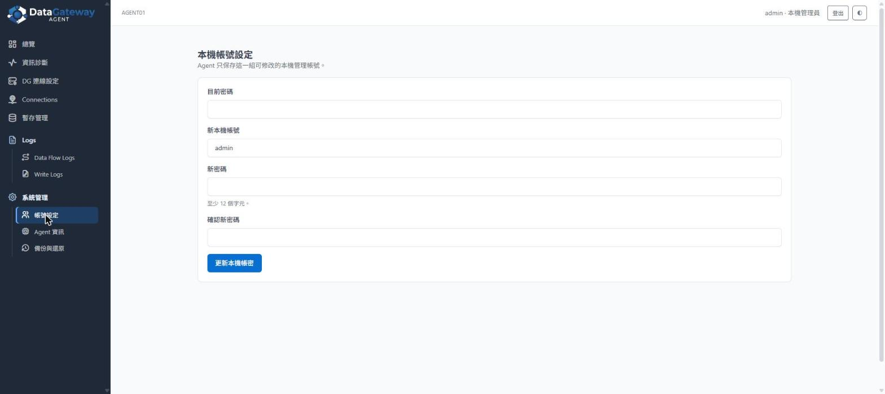

跳至主要內容
DataGateway Agent 操作手冊
Agent 手冊目錄
上一章
下一章
手冊首頁
Agent Manual · CHAPTER 10
帳號設定
Agent 只保存一組可修改的本機管理帳號。
10.1
修改本機帳號與密碼
功能位置
左側「系統管理 › 帳號設定」
前置條件與權限
已登入 Agent（或部署救援登入）

新密碼至少 12 個字元。
輸入目前密碼。
需要時修改「新本機帳號」。
輸入新密碼（至少 12 個字元）與確認新密碼。
按「更新本機帳密」。
之後用新的帳號與密碼登入。
失敗時先查
目前密碼錯誤：忘記時改用部署救援登入（第 1 章）。
← Data Flow Logs 與 Write Logs
Agent 資訊 →